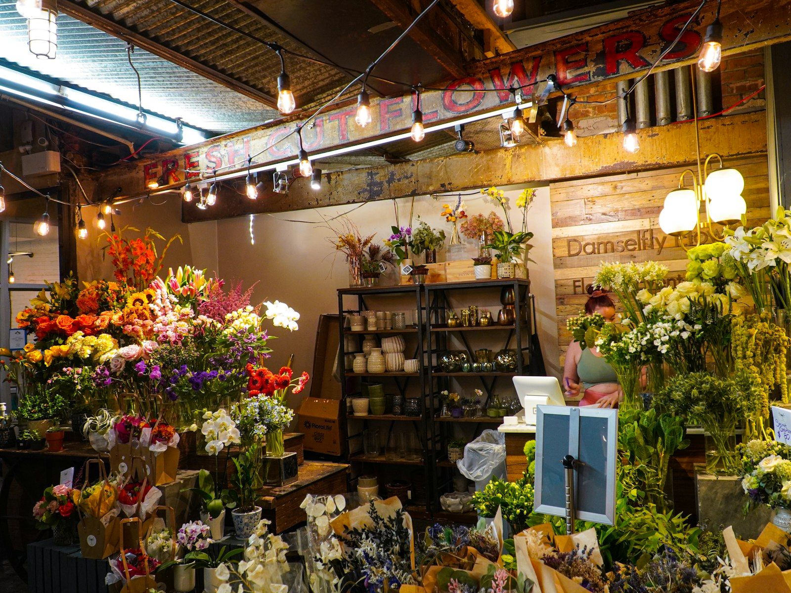
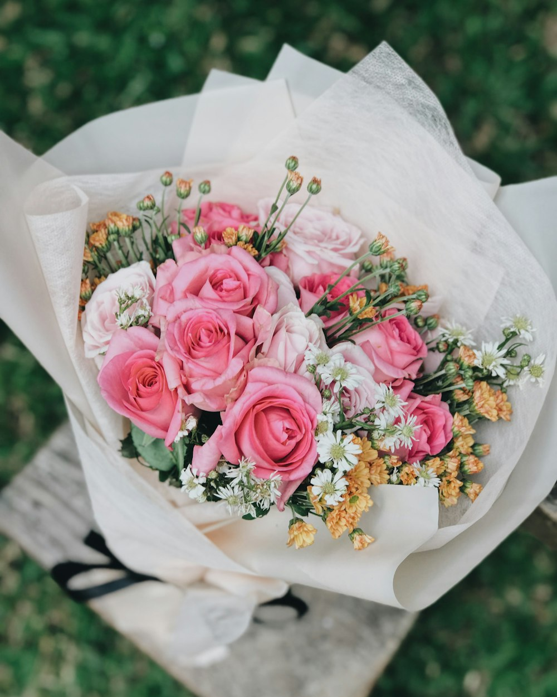
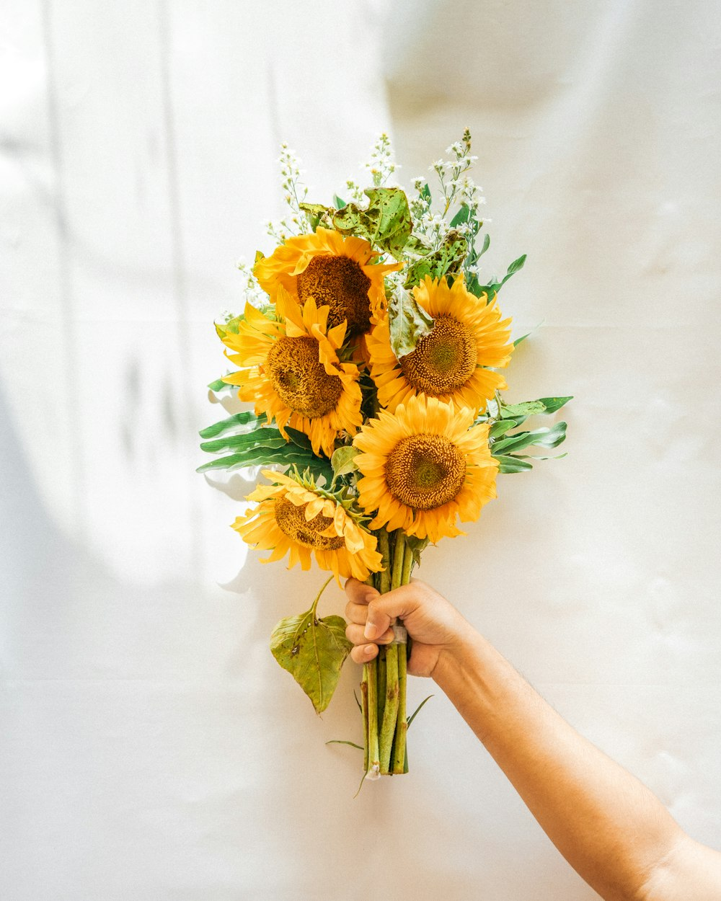
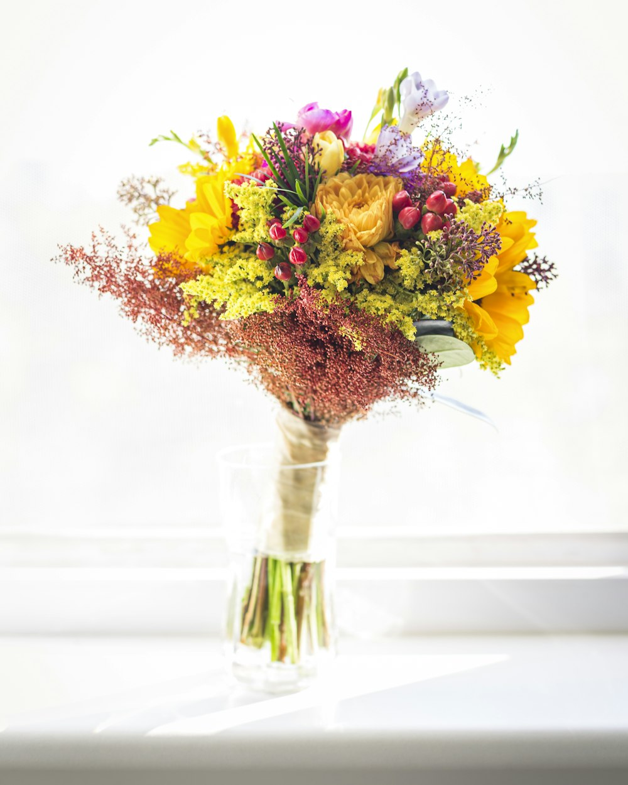
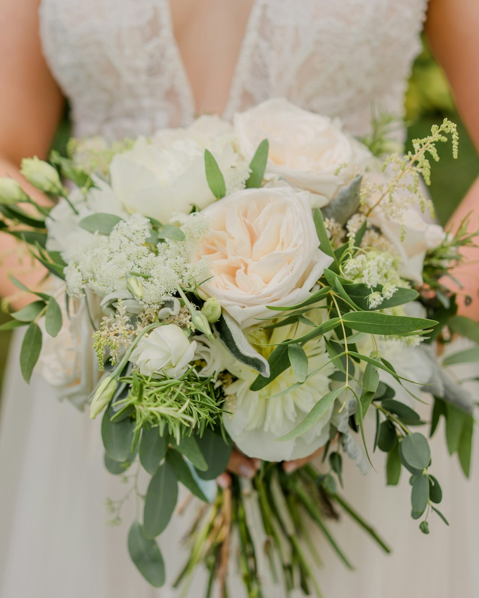
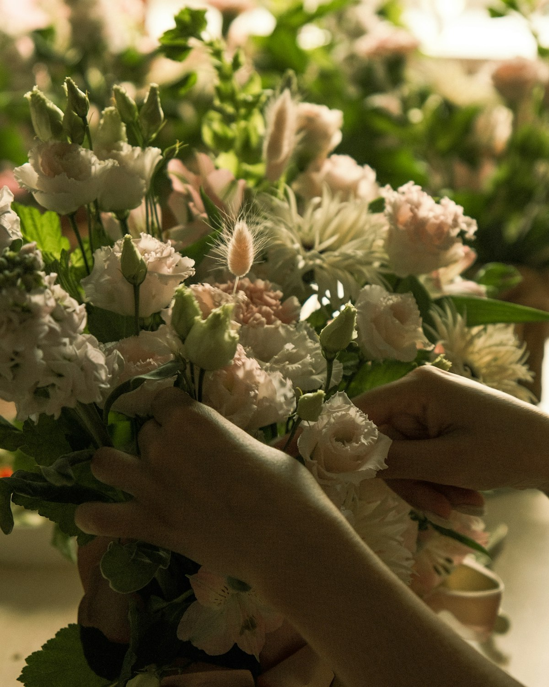

Wöchentlich
Jede Woche neu gebunden — für Räume, in denen ständig jemand vorbeikommt.
Beispiel-RhythmusSträuße, Pflanzen und Floristik für jeden Anlass — erzählen Sie uns, wofür es blühen soll, und holen Sie Ihren Strauß frisch gebunden im Laden ab.

Beispielfoto (Symbolbild)Blumen kauft man mit den Augen.
Manche Dinge sucht man nicht in Listen — man sieht sie und weiß: die sind es. Deshalb zeigt diese Seite Blumen statt Absätzen: Anlässe, Farbwelten und ein kurzer Weg zu Ihrem Strauß.
Fünf Anlässe als Startpunkt — jede Kachel führt direkt zur Anfrage.
Beispiel-Leistungsspektrum dieser Konzeptvorschau — das echte Sortiment stimmt der Laden mit Ihnen ab.Vier Beispiel-Farbwelten als Startpunkt — in der Anfrage wählen Sie Ihre Farbwelt direkt aus, den Rest besprechen wir bei der Beratung.




Beispiel-Farbwelten mit Beispielfotos (Symbolbilder) — was gerade Saison hat, sehen Sie im Laden.
Anlass, Farbwelt, Umfang — drei Klicks, und Sie sehen, worüber wir sprechen. Ihre Auswahl nehmen wir direkt mit in die Anfrage.
Ihr Strauß: klassisch, Zart & Pastell, zum Geburtstag.
Diesen Strauß anfragenTrauergestecke und stille Sträuße sagen, wofür Worte fehlen. Kommen Sie gern persönlich vorbei — wir nehmen uns Zeit und beraten Sie in Ruhe.
Wenn es Ihnen leichter fällt, können Sie Ihre Anfrage auch vorab notieren; alles Weitere besprechen wir gemeinsam im Laden.
Trauerfloristik anfragen
Beispielfoto (Symbolbild)Frische Blumen und Pflanzen, gebunden am Ladentisch: Sie erzählen, wofür es sein soll — wir stellen zusammen, was dazu passt und gerade am schönsten blüht.
Ein Strauß, der regelmäßig bereitsteht — für den Empfangstresen, den Esstisch oder als kleine Aufmerksamkeit. Drei Rhythmen als Startpunkt.
Jede Woche neu gebunden — für Räume, in denen ständig jemand vorbeikommt.
Beispiel-RhythmusDer ruhige Takt: frische Blumen, sobald die alten ihren Auftritt hatten.
Beispiel-RhythmusEinmal im Monat ein Strauß, der zur Jahreszeit passt — schön für zu Hause.
Beispiel-RhythmusBeispiel-Rhythmen dieser Konzeptvorschau ohne Preisangaben — Takt, Umfang und Rahmen stimmen Sie in Ruhe direkt mit dem Laden ab.
Anlass, Farbwelt und Wunschtermin — in zwei Minuten notiert.
Wir melden uns, besprechen Blumen und Umfang und klären Ihre Wünsche.
Ihr Strauß steht frisch gebunden zum Wunschtermin für Sie bereit.
Beispiel-Ablauf der Konzeptvorschau — den tatsächlichen Ablauf stimmt der Laden mit Ihnen ab.